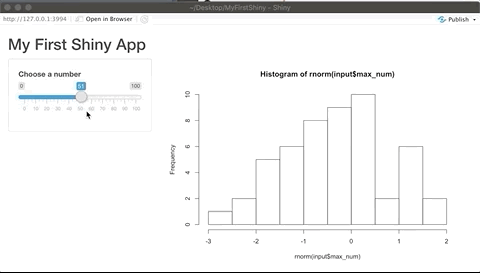

Ch 6 伺服器端程式 Server
Shiny App是由使用者介面(User Interface)與伺服器端程式 (Server Instruction)組合而成，而server函數中最重要的功能為產出使用者介面所需的輸出元件(內容)，本章節將介紹伺服器端程式的撰寫方法。
伺服器端程式中有server函數，server函數的格式如下:
從上述程式碼可以發現在server函數中，有兩個固定的參數，分別為input與output，input為使用者介面中所包含的輸入元件，output為輸出元件。若須取用特定輸入與輸出相關元件，可使用input或output$Id作為取用路徑，如input$checkbox，output$plot等，$錢字號前方指定取用輸入元件input還是輸出元件output，後方指定元件的Id。因此，在使用者介面函數中，幫各輸入與輸出元件取容易記憶與識別的Id是很重要的。
6.1 渲染函數 Render function
為了在server函數產出輸出元件，我們必須使用渲染函數(Render function)，渲染函數與輸入輸出函數類似，有固定的格式，通常為renderXXX()，XXX為需要呈現的資料/內容格式，如Plot、Image、Table等，組合成renderPlot()、renderImage()等函數。渲染函數的輸入參數為一獨立函數，此函數必須使用{ }大括號包起來。與撰寫函數一樣，{ }大括號中可有無限多行程式碼，以製作與產生需要呈現的資料/內容，如直方圖hist(rnorm(30))
若輸出的圖形/資料會依照輸入資料改變，則需要在渲染函數中取用輸入元件，取用方式為input$Id，如input$checkbox、input$max_num等，輸入元件的值會隨著使用者介面的調整而即時變動，承上述範例，我們可以將原數值30改為由輸入元件input$max_num決定，以達成互動式應用程式的效果。
最後將渲染函數的值指定給輸出元件，如output$hist<-渲染函數({#一大堆程式碼})，即完成使用者介面所需的輸出output元件的產出程式。
完整範例程式碼：
ui <- fluidPage( #頁面設定函數
titlePanel("My First Shiny App"), #標題版面(panel)
sidebarLayout( #版型(layout)
sidebarPanel( #側邊欄位版面(panel)
sliderInput( #輸入元件函數
inputId = "max_num",
label ="Choose a number",
min = 0, max = 100,
value =25
)
),
mainPanel(
plotOutput("hist")
) #主頁版面(panel)
)
)
server <- function (input,output){
output$hist<-renderPlot( {
hist(rnorm(input$max_num))
} )
}
shinyApp(ui = ui, server = server)上述程式程式可達效果：

若想要查看各項輸入元件取值的格式與範例程式碼，可至 Shiny Widgets Gallery網站查看。
延續上一章節 (5)，常見的輸出元件函數與其對應的渲染函數如下：
- 表格類
dataTableOutput():renderDataTable()tableOutput():renderTable()
- 圖片類
imageOutput():renderImage()plotOutput():renderPlot()
- HTML類
htmlOutput():renderUI()uiOutput():renderUI()
- 文字類
textOutput():renderText()verbatimTextOutput():renderText()
6.2 反應函數 Reactive function
撰寫中
在使用者介面中，當輸入元件 (如input$num)的值改變時，會通知使用該輸入元件的反應函數，該反應函數會使用該輸入元件的新值，並做相對應的運算與輸出處理，上個小節介紹的渲染函數為最常見的反應函數。
以渲染函數來說，若輸入元件 (如input$max_num)的值改變時，渲染函數renderPlot({ })大括號{ }中的程式碼會從頭到尾從新執行一次。
6.2.1 reactive()
在某些狀況中，渲染函數renderPlot({ })大括號{ }中的程式碼會在server function中出現多次，若每次輸入元件改變時，同樣的程式碼必須執行多次，可能會影響在效能，此時可用反應函數reactive()，將執行結果暫存。
6.2.2 isolate()
isolate()
將不需即時反應/重跑程式的輸入元件放入隔離函數isolate()中，即可將此輸入元件變成非反應元件，當此輸入元件改變時，程式並不會重跑。此法可降低程式重跑的次數，提升效能與使用者體驗。
6.2.3 observeEvent()
observeEvent()，當observeEvent()中的輸入元件改變時，將會觸發伺服器端程式碼的執行
observe()就像其他反應函數的使用方式
6.2.4 eventReactive()
Delay reactions
eventReactive()
根據上述反應函數的介紹，通常輸入元件改變時，反應函數會即時反應，並改變輸出內容，但有時我們想避免不必要的即時反應，舉例來說，
action button
reactiveValues()
藉由輸入函數，修改自定義的資料內容，接著觸發反應函數的功能，並更新相對應的輸出
timer
以Shiny App的設計來說，每個使用者打開你所開發的Shiny App時，伺服器端程式 (Server Instruction)中的程式碼都會執行，但其他部分的程式只會在每個R session開始時執行一次。